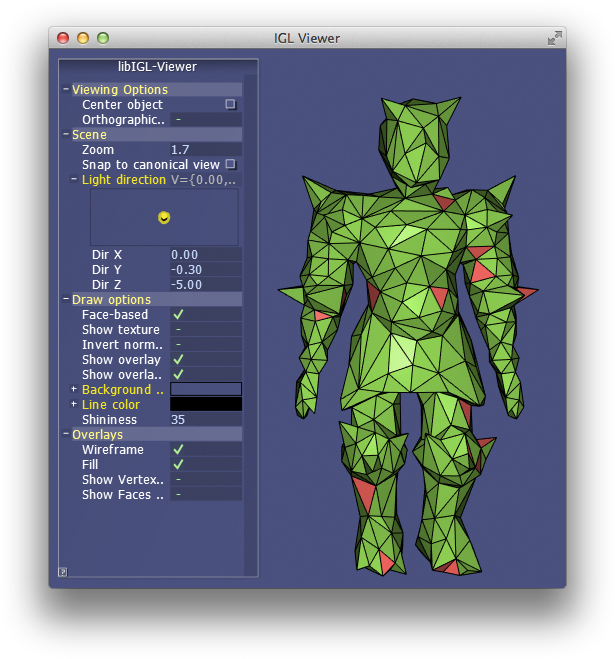
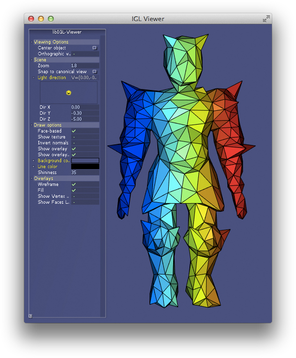
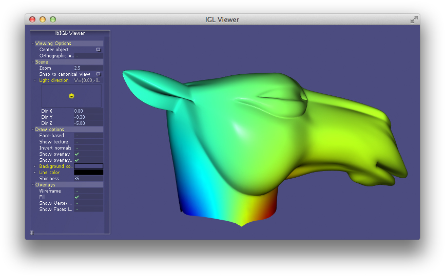
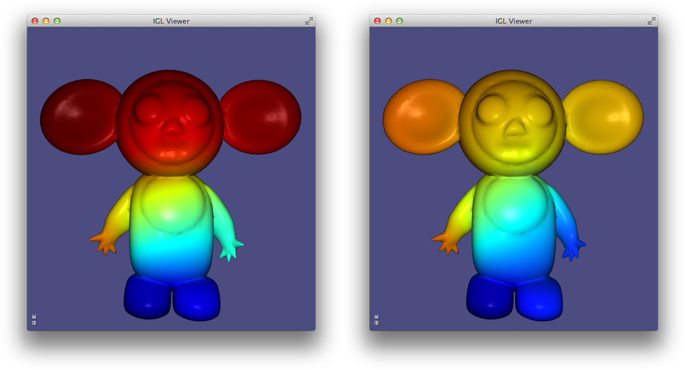
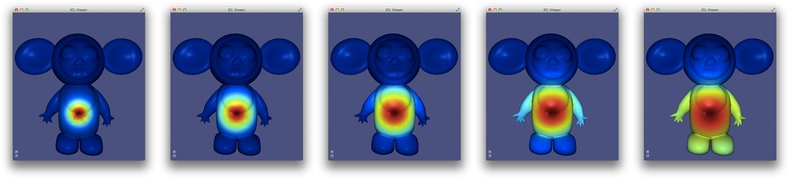
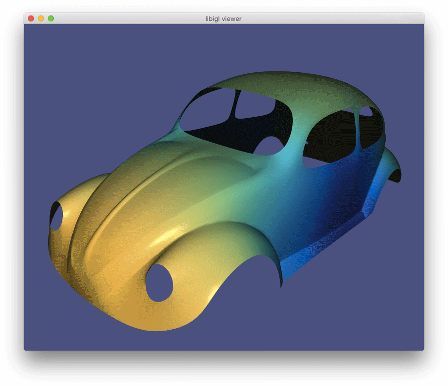

Chapter 3: Matrices and linear algebra¶
Libigl relies heavily on the Eigen library for dense and sparse linear algebra routines. Besides geometry processing routines, libigl has linear algebra routines which bootstrap Eigen and make it feel even more similar to a high-level algebra library such as Matlab.
Slice¶
A very familiar and powerful routine in Matlab is array slicing. This allows reading from or writing to a possibly non-contiguous sub-matrix. Let's consider the Matlab code:
B = A(R,C);
If A is a m \times n matrix and R is a j-long list of row-indices
(between 1 and m) and C is a k-long list of column-indices, then as a
result B will be a j \times k matrix drawing elements from A according to
R and C. In libigl, the same functionality is provided by the slice
function (Example 301):
VectorXi R,C; MatrixXd A,B; ... igl::slice(A,R,C,B);
Note that A and B could also be sparse matrices.
Similarly, consider the Matlab code:
A(R,C) = B;
Now, the selection is on the left-hand side so the j \times k matrix B is
being written into the submatrix of A determined by R and C. This
functionality is provided in libigl using slice_into:
igl::slice_into(B,R,C,A);

Sort¶
Matlab and other higher-level languages make it very easy to extract indices of sorting and comparison routines. For example in Matlab, one can write:
[Y,I] = sort(X,1,'ascend');
so if X is a m \times n matrix then Y will also be an m \times n matrix
with entries sorted along dimension 1 in 'ascend'ing order. The second
output I is a m \times n matrix of indices such that Y(i,j) =X(I(i,j),j);. That is, I reveals how X is sorted into Y.
This same functionality is supported in libigl:
igl::sort(X,1,true,Y,I);
Similarly, sorting entire rows can be accomplished in Matlab using:
[Y,I] = sortrows(X,'ascend');
where now I is a m vector of indices such that Y = X(I,:).
In libigl, this is supported with
igl::sortrows(X,true,Y,I);
I reveals the index of sort so that it can be reproduced with
igl::slice(X,I,1,Y).
Analogous functions are available in libigl for: max, min, and unique.

Other Matlab-style functions¶
Libigl implements a variety of other routines with the same api and functionality as common Matlab functions.
| Name | Description |
|---|---|
igl::all |
Whether all elements are non-zero (true) |
igl::any |
Whether any elements are non-zero (true) |
igl::cat |
Concatenate two matrices (especially useful for dealing with Eigen sparse matrices) |
igl::ceil |
Round entries up to nearest integer |
igl::cumsum |
Cumulative sum of matrix elements |
igl::colon |
Act like Matlab's :, similar to Eigen's LinSpaced |
igl::components |
Connected components of graph (cf. Matlab's graphconncomp) |
igl::count |
Count non-zeros in rows or columns |
igl::cross |
Cross product per-row |
igl::cumsum |
Cumulative summation |
igl::dot |
dot product per-row |
igl::eigs |
Solve sparse eigen value problem |
igl::find |
Find subscripts of non-zero entries |
igl::floor |
Round entries down to nearest integer |
igl::histc |
Counting occurrences for building a histogram |
igl::hsv_to_rgb |
Convert HSV colors to RGB (cf. Matlab's hsv2rgb) |
igl::intersect |
Set intersection of matrix elements. |
igl::isdiag |
Determine whether matrix is diagonal |
igl::ismember |
Determine whether elements in A occur in B |
igl::jet |
Quantized colors along the rainbow. |
igl::max |
Compute maximum entry per row or column |
igl::median |
Compute the median per column |
igl::min |
Compute minimum entry per row or column |
igl::mod |
Compute per element modulo |
igl::mode |
Compute the mode per column |
igl::null |
Compute the null space basis of a matrix |
igl::nchoosek |
Compute all k-size combinations of n-long vector |
igl::orth |
Orthogonalization of a basis |
igl::parula |
Generate a quantized colormap from blue to yellow |
igl::pinv |
Compute Moore-Penrose pseudoinverse |
igl::randperm |
Generate a random permutation of [0,...,n-1] |
igl::rgb_to_hsv |
Convert RGB colors to HSV (cf. Matlab's rgb2hsv) |
igl::repmat |
Repeat a matrix along columns and rows |
igl::round |
Per-element round to whole number |
igl::setdiff |
Set difference of matrix elements |
igl::setunion |
Set union of matrix elements |
igl::setxor |
Set exclusive "or" of matrix elements |
igl::slice |
Slice parts of matrix using index lists: (cf. Matlab's B = A(I,J)) |
igl::slice_mask |
Slice parts of matrix using boolean masks: (cf. Matlab's B = A(M,N)) |
igl::slice_into |
Slice left-hand side of matrix assignment using index lists (cf. Matlab's B(I,J) = A) |
igl::sort |
Sort elements or rows of matrix |
igl::speye |
Identity as sparse matrix |
igl::sum |
Sum along columns or rows (of sparse matrix) |
igl::unique |
Extract unique elements or rows of matrix |
Laplace equation¶
A common linear system in geometry processing is the Laplace equation:
∆z = 0
subject to some boundary conditions, for example Dirichlet boundary conditions (fixed value):
\left.z\right|_{\partial{S}} = z_{bc}
In the discrete setting, the linear system can be written as:
\mathbf{L} \mathbf{z} = \mathbf{0}
where \mathbf{L} is the n \times n discrete Laplacian and \mathbf{z} is a vector of per-vertex values. Most of \mathbf{z} correspond to interior vertices and are unknown, but some of \mathbf{z} represent values at boundary vertices. Their values are known so we may move their corresponding terms to the right-hand side.
Conceptually, this is very easy if we have sorted \mathbf{z} so that interior vertices come first and then boundary vertices:
\left(\begin{array}{cc} \mathbf{L}_{in,in} & \mathbf{L}_{in,b}\\ \mathbf{L}_{b,in} & \mathbf{L}_{b,b}\end{array}\right) \left(\begin{array}{c} \mathbf{z}_{in}\\ \mathbf{z}_{b}\end{array}\right) = \left(\begin{array}{c} \mathbf{0}_{in}\\ \mathbf{z}_{bc}\end{array}\right)
The bottom block of equations is no longer meaningful so we'll only consider the top block:
\left(\begin{array}{cc} \mathbf{L}_{in,in} & \mathbf{L}_{in,b}\end{array}\right) \left(\begin{array}{c} \mathbf{z}_{in}\\ \mathbf{z}_{b}\end{array}\right) = \mathbf{0}_{in}
We can move the known values to the right-hand side:
\mathbf{L}_{in,in} \mathbf{z}_{in} = - \mathbf{L}_{in,b} \mathbf{z}_{b}
Finally we can solve this equation for the unknown values at interior vertices \mathbf{z}_{in}.
However, our vertices will often not be sorted in this way. One option would be to sort V,
then proceed as above and then unsort the solution Z to match V. However,
this solution is not very general.
With array slicing no explicit sort is needed. Instead we can slice-out
submatrix blocks (\mathbf{L}_{in,in}, \mathbf{L}_{in,b}, etc.) and follow
the linear algebra above directly. Then we can slice the solution into the
rows of Z corresponding to the interior vertices (Example 303).

Quadratic energy minimization¶
The same Laplace equation may be equivalently derived by minimizing Dirichlet energy subject to the same boundary conditions:
\mathop{\text{minimize }}_z \frac{1}{2}\int\limits_S \|\nabla z\|^2 dA
On our discrete mesh, recall that this becomes
\mathop{\text{minimize }}_\mathbf{z} \frac{1}{2}\mathbf{z}^T \mathbf{G}^T \mathbf{D} \mathbf{G} \mathbf{z} \rightarrow \mathop{\text{minimize }}_\mathbf{z} \mathbf{z}^T \mathbf{L} \mathbf{z}
The general problem of minimizing some energy over a mesh subject to fixed value boundary conditions is so wide spread that libigl has a dedicated api for solving such systems.
Let us consider a general quadratic minimization problem subject to different common constraints:
\mathop{\text{minimize }}_\mathbf{z} \frac{1}{2}\mathbf{z}^T \mathbf{Q} \mathbf{z} + \mathbf{z}^T \mathbf{B} + \text{constant},
subject to
\mathbf{z}_b = \mathbf{z}_{bc} \text{ and } \mathbf{A}_{eq} \mathbf{z} = \mathbf{B}_{eq},
where
- \mathbf{Q} is a (usually sparse) n \times n positive semi-definite matrix of quadratic coefficients (Hessian),
- \mathbf{B} is a n \times 1 vector of linear coefficients,
- \mathbf{z}_b is a |b| \times 1 portion of \mathbf{z} corresponding to boundary or fixed vertices,
- \mathbf{z}_{bc} is a |b| \times 1 vector of known values corresponding to \mathbf{z}_b,
- \mathbf{A}_{eq} is a (usually sparse) m \times n matrix of linear equality constraint coefficients (one row per constraint), and
- \mathbf{B}_{eq} is a m \times 1 vector of linear equality constraint right-hand side values.
This specification is overly general as we could write \mathbf{z}_b = \mathbf{z}_{bc} as rows of \mathbf{A}_{eq} \mathbf{z} = \mathbf{B}_{eq}, but these fixed value constraints appear so often that they merit a dedicated place in the API.
In libigl, solving such quadratic optimization problems is split into two routines: precomputation and solve. Precomputation only depends on the quadratic coefficients, known value indices and linear constraint coefficients:
igl::min_quad_with_fixed_data mqwf; igl::min_quad_with_fixed_precompute(Q,b,Aeq,true,mqwf);
The output is a struct mqwf which contains the system matrix factorization
and is used during solving with arbitrary linear terms, known values, and
constraint in the right-hand sides:
igl::min_quad_with_fixed_solve(mqwf,B,bc,Beq,Z);
The output Z is a n \times 1 vector of solutions with fixed values
correctly placed to match the mesh vertices V.
Linear equality constraints¶
We saw above that min_quad_with_fixed_* in libigl provides a compact way to
solve general quadratic programs. Let's consider another example, this time
with active linear equality constraints. Specifically let's solve the
bi-Laplace equation or equivalently minimize the Laplace energy:
\Delta^2 z = 0 \leftrightarrow \mathop{\text{minimize }}\limits_z \frac{1}{2} \int\limits_S (\Delta z)^2 dA
subject to fixed value constraints and a linear equality constraint:
z_{a} = 1, z_{b} = -1 and z_{c} = z_{d}.
Notice that we can rewrite the last constraint in the familiar form from above:
z_{c} - z_{d} = 0.
Now we can assembly Aeq as a 1 \times n sparse matrix with a coefficient
1 in the column corresponding to vertex c and a -1 at d. The right-hand
side Beq is simply zero.
Internally, min_quad_with_fixed_* solves using the Lagrange Multiplier
method. This method adds additional variables for each linear constraint (in
general a m \times 1 vector of variables \lambda) and then solves the
saddle problem:
\mathop{\text{find saddle }}_{\mathbf{z},\lambda}\, \frac{1}{2}\mathbf{z}^T \mathbf{Q} \mathbf{z} + \mathbf{z}^T \mathbf{B} + \text{constant} + \lambda^T\left(\mathbf{A}_{eq} \mathbf{z} - \mathbf{B}_{eq}\right)
This can be rewritten in a more familiar form by stacking \mathbf{z} and \lambda into one (m+n) \times 1 vector of unknowns:
\mathop{\text{find saddle }}_{\mathbf{z},\lambda}\, \frac{1}{2} \left( \mathbf{z}^T \lambda^T \right) \left( \begin{array}{cc} \mathbf{Q} & \mathbf{A}_{eq}^T\\ \mathbf{A}_{eq} & 0 \end{array} \right) \left( \begin{array}{c} \mathbf{z}\\ \lambda \end{array} \right) + \left( \mathbf{z}^T \lambda^T \right) \left( \begin{array}{c} \mathbf{B}\\ -\mathbf{B}_{eq} \end{array} \right) + \text{constant}
Differentiating with respect to \left( \mathbf{z}^T \lambda^T \right) reveals
a linear system and we can solve for \mathbf{z} and \lambda. The only
difference from the straight quadratic minimization system, is that this
saddle problem system will not be positive definite. Thus, we must use a
different factorization technique (LDLT rather than LLT): libigl's
min_quad_with_fixed_precompute automatically chooses the correct solver in
the presence of linear equality constraints (Example 304).

Quadratic programming¶
We can generalize the quadratic optimization in the previous section even more by allowing inequality constraints. Specifically box constraints (lower and upper bounds):
\mathbf{l} \le \mathbf{z} \le \mathbf{u},
where \mathbf{l},\mathbf{u} are n \times 1 vectors of lower and upper bounds and general linear inequality constraints:
\mathbf{A}_{ieq} \mathbf{z} \le \mathbf{B}_{ieq},
where \mathbf{A}_{ieq} is a k \times n matrix of linear coefficients and \mathbf{B}_{ieq} is a k \times 1 matrix of constraint right-hand sides.
Again, we are overly general as the box constraints could be written as rows of the linear inequality constraints, but bounds appear frequently enough to merit a dedicated api.
Libigl implements its own active set routine for solving quadratric programs (QPs). This algorithm works by iteratively "activating" violated inequality constraints by enforcing them as equalities and "deactivating" constraints which are no longer needed.
After deciding which constraints are active at each iteration, the problem reduces to a quadratic minimization subject to linear equality constraints, and the method from the previous section is invoked. This is repeated until convergence.
Currently the implementation is efficient for box constraints and sparse non-overlapping linear inequality constraints.
Unlike alternative interior-point methods, the active set method benefits from a warm-start (initial guess for the solution vector \mathbf{z}).
igl::active_set_params as; // Z is optional initial guess and output igl::active_set(Q,B,b,bc,Aeq,Beq,Aieq,Bieq,lx,ux,as,Z);

Eigen Decomposition¶
Libigl has rudimentary support for extracting eigen pairs of a generalized eigen value problem:
Ax = \lambda B x
where A is a sparse symmetric matrix and B is a sparse positive definite matrix. Most commonly in geometry processing, we let A=L the cotangent Laplacian and B=M the per-vertex mass matrix (e.g. [#vallet_2008][]). Typically applications will make use of the low frequency eigen modes. Analogous to the Fourier decomposition, a function f on a surface can be represented via its spectral decomposition of the eigen modes of the Laplace-Beltrami:
f = \sum\limits_{i=1}^\infty a_i \phi_i
where each \phi_i is an eigen function satisfying: \Delta \phi_i = \lambda_i \phi_i and a_i are scalar coefficients. For a discrete triangle mesh, a completely analogous decomposition exists, albeit with finite sum:
\mathbf{f} = \sum\limits_{i=1}^n a_i \phi_i
where now a column vector of values at vertices \mathbf{f} \in \mathcal{R}^n specifies a piecewise linear function and \phi_i \in \mathcal{R}^n is an eigen vector satisfying:
\mathbf{L} \phi_i = \lambda_i \mathbf{M} \phi_i.
Note that Vallet & Levy [#vallet_2008][] propose solving a symmetrized standard eigen problem \mathbf{M}^{-1/2}\mathbf{L}\mathbf{M}^{-1/2} \phi_i = \lambda_i \phi_i. Libigl implements a generalized eigen problem solver so this unnecessary symmetrization can be avoided.
Often the sum above is truncated to the first k eigen vectors. If the low frequency modes are chosen, i.e. those corresponding to small \lambda_i values, then this truncation effectively regularizes \mathbf{f} to smooth, slowly changing functions over the mesh (e.g. [#hildebrandt_2011][]). Modal analysis and model subspaces have been used frequently in real-time deformation (e.g. [#barbic_2005][]).
In Example 306), the first 5 eigen vectors
of the discrete Laplace-Beltrami operator are computed and displayed in
pseudo-color atop the beetle. Eigen vectors are computed using igl::eigs
(mirroring MATLAB's eigs). The 5 eigen vectors are placed into the columns
of U and the eigen values are placed into the entries of S:
SparseMatrix<double> L,M; igl::cotmatrix(V,F,L); igl::massmatrix(V,F,igl::MASSMATRIX_TYPE_DEFAULT,M); Eigen::MatrixXd U; Eigen::VectorXd S; igl::eigs(L,M,5,igl::EIGS_TYPE_SM,U,S);
